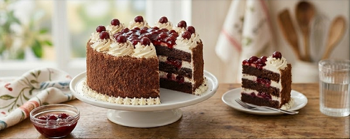

This elegant three-layer dessert features a deeply moist chocolate sponge, a tangy homemade sour cherry compote, and cloud-like sweetened whipped cream. To give it a professional bakery finish, the sides are coated in delicate cake crumbs.
Set your oven to 350°F (175°C). Lightly grease two 9-inch round cake pans, dust them with a bit of flour, and line the bottom of each with a round of parchment paper. Pop a medium mixing bowl into the refrigerator to chill for the frosting later.
In a spacious mixing bowl, vigorously whisk together the flour, granulated sugar, cocoa powder, baking powder, baking soda, and salt until uniform.
Pour in the eggs, milk, vegetable oil, and vanilla extract. Beat the mixture thoroughly using a hand mixer or whisk just until a smooth batter forms.
Divide the batter evenly between your two prepared cake pans. Bake for roughly 35 minutes, or until a wooden toothpick inserted into the center comes out clean.
Let the cakes rest in their pans on a wire rack for 10 minutes. Run a thin knife or offset spatula around the edges to loosen them, then carefully invert the cakes onto the racks to cool completely (about 1 to 2 hours).
Pour the ½ cup of reserved cherry juice, the drained sour cherries, granulated sugar, and cornstarch into a saucepan.
Place the pan over low heat and cook, stirring continuously, until the mixture thickens into a glossy glaze.
Remove from the heat, stir in the vanilla extract, and let it cool at room temperature for 30 minutes. Move it to the fridge to cool completely before assembly.
Retrieve your chilled bowl. Pour in the heavy cream and powdered sugar, beating on high speed until stiff peaks form.
Using a long, sharp serrated knife, slice both cooled cake layers in half horizontally, giving you 4 thin layers total.
Take one of the four layers and crumble it finely into a bowl; set these crumbs aside to decorate the sides later. Gently brush away any loose crumbs from the remaining three layers.
Set aside 1 ½ cups of the whipped cream in a piping bag fitted with a star tip for final decorations.
Place your first cake layer onto a serving platter. Evenly spread 1 cup of whipped cream over it, followed by ¾ cup of the cooled cherry filling.
Stack the second cake layer on top and repeat the process with another layer of cream and cherries.
Top with the third cake layer. Coat the top and sides of the entire cake with the remaining whipped cream.
Gently press your reserved cake crumbs onto the sides of the cake. Pipe decorative rosettes around the top edge using your piping bag, then spoon the remaining cherry filling into the center of the top.